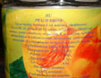

Aluszkálunk és fûtünk...
Egy érdekes kárfelmérõlap

Az élelmiszeripar rejtélyei. Az egy dolog, hogy ebben az úgynevezett HU PEACH DRINK-ben mindössze 1% a gyümölcstartalom, és az történetesen egyik sem PEACH, azaz barack, de az aggódók megnyugtatására azért odaírták, hogy zsír nincs benne. Köszönjük.
Az élelmiszeripar további rejtélyei. Most akkor milyen ízû ez?
Hála a jó égnek, a dezodor nem tartalmaz nyulat.
Ez itt egy tipikus magyar bolt ünnepi nyitvatartása. Tetszikérteni?
Segélykérõ. Támogatnám, hogy a cigányoknak is ilyenen kelljen kérniük.
Interneten jártomban-keltemben, egy amerikai faszi turistafotói közt találtam ezt a képet a mi Lánchidunkról. Hö? Ezt így hogy?
Fontos figyelmeztetés egy társasház kapualjából

Ez a kép pedig Németországban készült. A tábla felirata: Nõi parkoló - Kérjük, 4 helyet hagyjon szabadon.
Végezetül a Munkavédelmi Liga fotóalbumából mutatunk be egy képet...